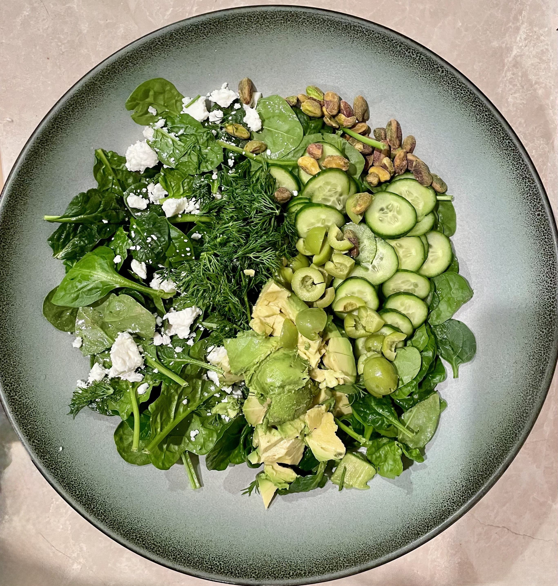

I've become known as the “salad lady” among my friends, who often request that I bring a salad to their dinner parties. The magic is really in the herbs, salt, and lemon. Often I'll add a little bit of shallot to the dressing, and let it sit in the lemon to mellow it out. The best part of salad is that there are a ton of options and you can make it to your taste.
Here's one of my favorite combinations:
Ingredients
- 4 cups greens (little gems, arugula, butter lettuce, or baby spinach)
- Leaves and tender stems of your favorite herbs, like cilantro, basil, parsley, chives. My go tos are mint and dill, or even just dill.
- Calevestrano olives, chopped
- Really good feta
- Persian cucumbers, sliced
- Pistachios (if you like crunch)
- 1 Avocado, diced
Dressing
- 1 lemon
- 1 teaspoon of diced shallot
- Flaky salt and freshly ground black pepper
- Light olive oil
Instructions
- Add everything to a bowl
- Add dressing and combine right before serving